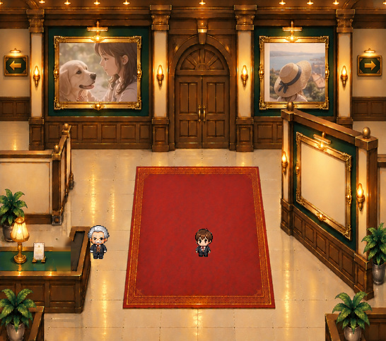

配置と大きさを確認
原本写真・承認済みキャラクター素材と合成した画像です。花器以外は変更していません。
空のカウンターとの比較



サイズ変更の合成比較


花器を消した後ろの緑色の天板は原本から修復しています。写真の窓や正式キャラクターは描き直していません。画素完全一致ではなく修復範囲外一致で検証済みです。
原本の黄色い花と銀色の花器を取り出し、写真や館内を変えずに移動・拡大縮小できる素材にしました。
原本写真・承認済みキャラクター素材と合成した画像です。花器以外は変更していません。

花器を消した後ろの緑色の天板は原本から修復しています。写真の窓や正式キャラクターは描き直していません。画素完全一致ではなく修復範囲外一致で検証済みです。